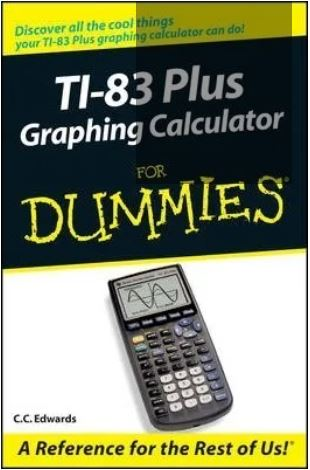

CALCULADORA TI-83
La Texas Instruments modelo TI-83 plus es quizás el modelo más conseguido de calculadoras programables de esta empresa. Cierto es, que detrás hay modelos todavía un poco más evolucionados (como la TI-84+), pero sin duda, esta máquina reúne toda la potencia y el equilibrio de todas las calculadores programables de finales del siglo pasado y principios de éste. Dispone de una excelente pantalla que se lee con mucha comodidad al tener buen contraste, gran claridad, y una amplitud más que aceptable con 8 líneas de 16 caracteres en el modo texto, o de 64x96 píxeles en modo gráfico. Todas estas características han hecho que la TI-83+
sea la calculadora gráfica más vendida en los Estados Unidos y Canadá.

De este manual es uno de los mas recomendados para iniciarse con esta calculadora,
la autora es C.C Edwards Ph.D en Matemáticas de la Universidad de Wisconsin, Milwuake.
Tiene 249 páginas y 9 capitulos donde estan los contenidos mas importantes
para el manejo de esta obra de ingeniería